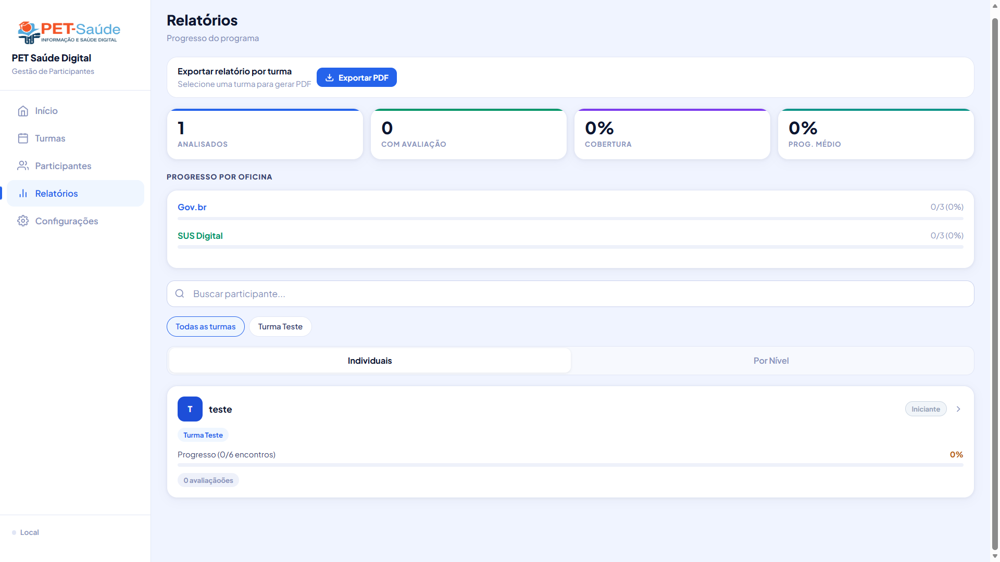
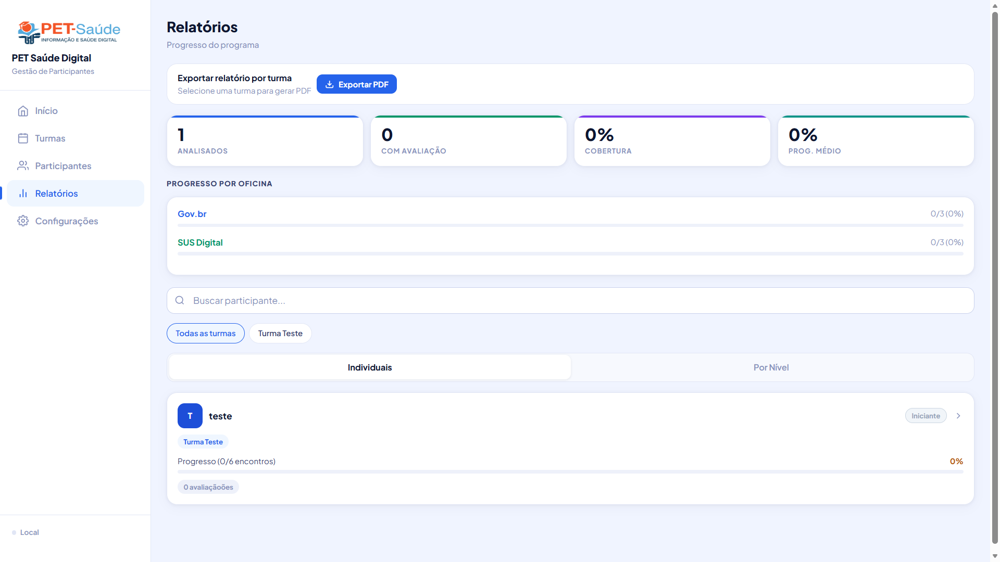
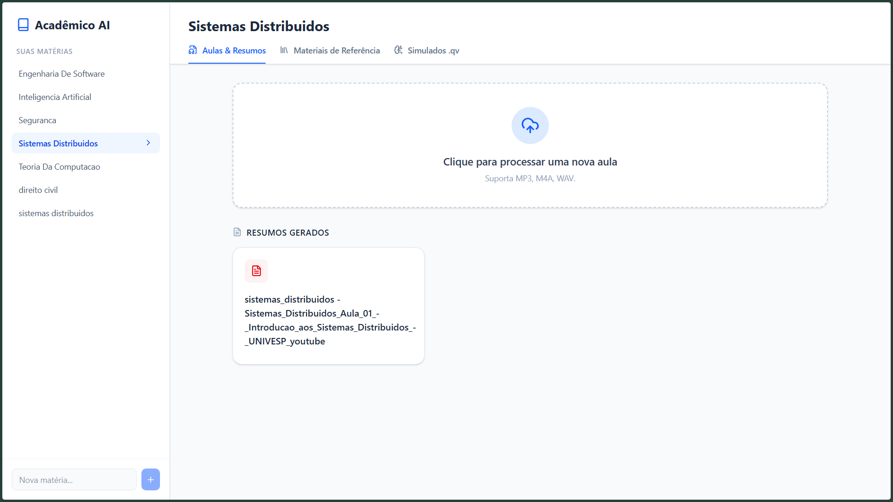
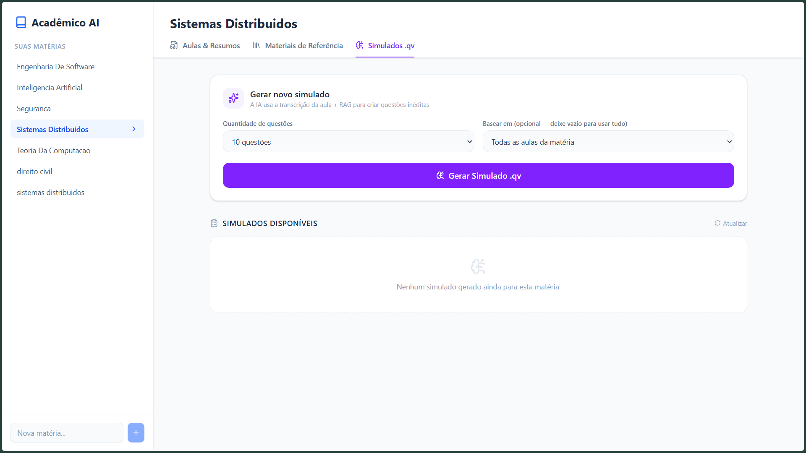
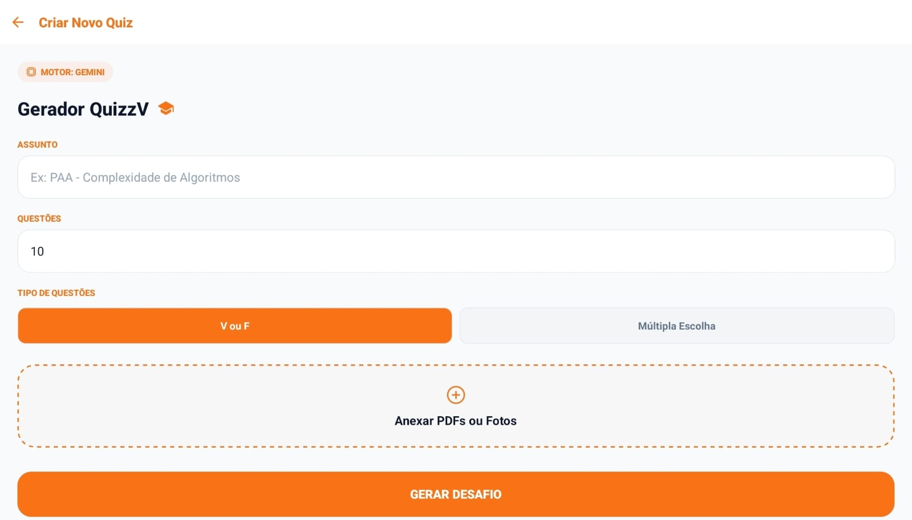
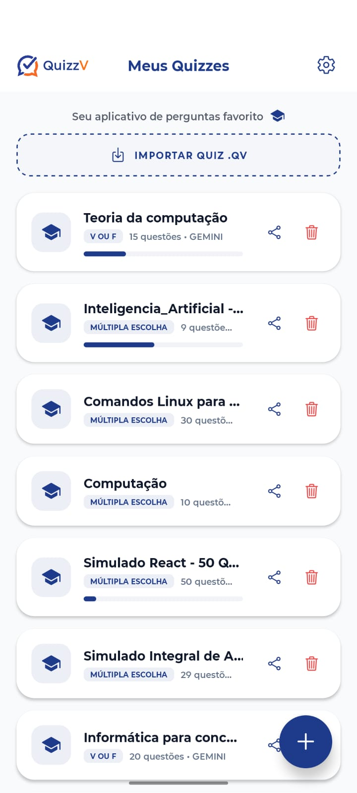

Victor
Kauan
Desenvolvedor Full-Stack focado em resolver problemas complexos na interseção entre Inteligência Artificial Generativa, Visão Computacional, Cibersegurança e Arquitetura de Baixo Nível.

A Jornada Técnica
Minha fundação na Ciência da Computação na Universidade Federal do Piauí (UFPI) foi construída não apenas em sala de aula, mas em laboratórios de pesquisa e no campo real. No CESLA, mergulhei no universo da Visão Computacional — desenvolvendo sistemas que enxergam, interpretam e reagem ao mundo visual.
Acredito que o software mais impactante nasce da interseção entre pesquisa acadêmica e necessidades reais. Essa filosofia me guia tanto no laboratório quanto em projetos sociais como o PET Saúde Digital, onde tecnologia encontra saúde pública.
Da síntese de hardware em Verilog a APIs Flask com foco em segurança, busco atuar em toda a profundidade da stack — do silício à interface.
Engenharia de Impacto
PET Saúde — Gestão de Participantes
Aplicação Web Progressiva (PWA) para gestão completa de participantes do programa. Sincronização em tempo real via Firebase Firestore, integração com Google Drive OAuth, geração de relatórios PDF, suporte offline e instalável como app nativo — tudo em HTML/CSS/JS puro, zero build tools.


StudyAI — Transcrição & Resumos Inteligentes
Ferramenta de estudo inteligente com pipeline completo: upload de áudio → transcrição via OpenAI Whisper → busca semântica em livros e slides da matéria com RAG (Retrieval-Augmented Generation) → geração de resumos em LaTeX ou baterias de questões exportáveis direto para o QuizzV. Interface construída em React, integração nativa com o ecossistema QuizzV.


Verilog de Forma Didática
Plataforma educacional que conteineriza processos via Docker API, permitindo que alunos escrevam, sintetizem via Yosys e simulem no Icarus Verilog diretamente pelo navegador.
QuizzV Ecosystem
Ecossistema multiplataforma (Mobile & Desktop) impulsionado por Inteligência Artificial Generativa. Processa documentos PDF, extrai contextos via técnicas de NLP e RAG, e solicita dinamicamente que LLMs gerem baterias inteiras de quizzes estruturados.


Módulos do Sistema
Processador RISC-V
Implementação em hardware (Verilog) de uma CPU baseada na arquitetura RISC-V. Foco em otimização de caminhos de dados e pipelines lógicos. Projeto de baixo nível que demonstra domínio da arquitetura de computadores.
Ver no GitHubAngry Birds 3D — OpenGL
Recriação do clássico em 3D usando OpenGL + GLUT em C++. Demonstra domínio de computação gráfica, renderização 3D e física simulada. Projeto que gerou maior número de estrelas no GitHub.
Ver no GitHubProntuário Flask — PET Saúde
Sistema de controle de prontuários desenvolvido para a parceria UFPI × FMS. Backend em Flask com autenticação segura (JWT, bcrypt, RBAC), validação de dados e endpoints REST para gestão de registros de saúde.
Ver no GitHubDashboard de Relatórios
Sistema de relatórios e visualização de dados desenvolvido em Python. Geração automatizada de dashboards e exportação de documentos para acompanhamento de métricas institucionais.
Ver no GitHubOMR Scanner — CESLA/UFPI
API de Reconhecimento Óptico de Marcações desenvolvida no laboratório CESLA. Usa OpenCV para detecção de contornos, correção de perspectiva e leitura de bolhas em gabaritos. Backend Flask com endpoints REST.
Ver no GitHub8-Puzzle Containerizado
Resolução clássica do 8-puzzle com backend construído em Rust, entregando alta performance para o processamento lógico, integrado a um frontend React. Containerizado com Docker para deploy simplificado.
Ver no GitHub